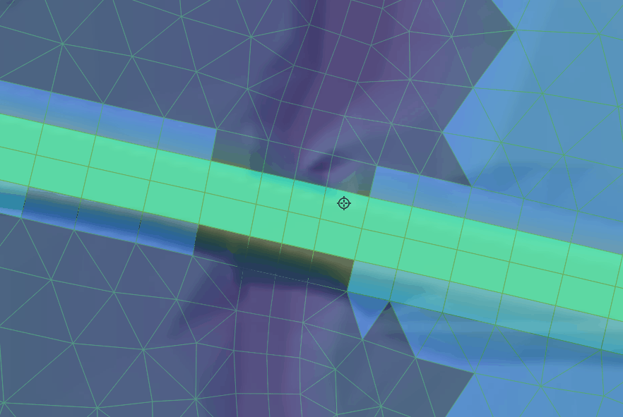
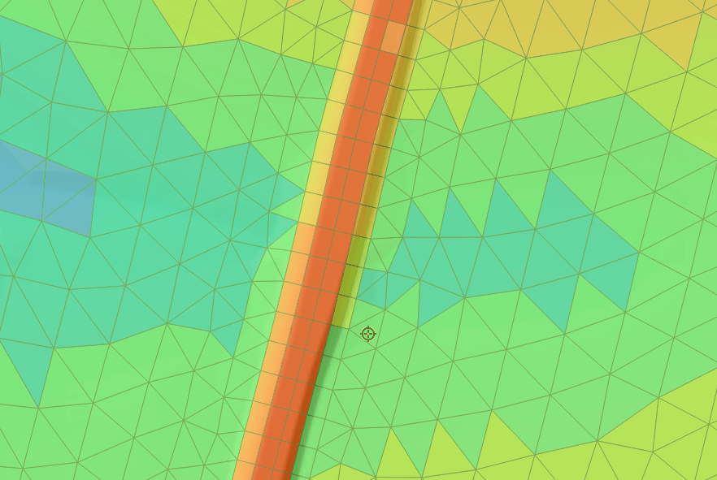
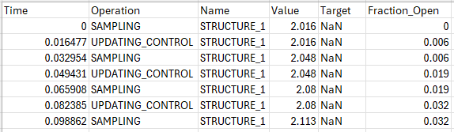

5.17 Hydraulic Structures
5.17.2 Description
TUFLOW FV supports a range of hydraulic structure types including weirs, culverts and bridges. Additional behaviour may be defined using user defined water level versus discharge relationships or prescribed time series. Structure types may include operational controls to represent pumps, gates, valves or other flow regulation devices.
Hydraulic structures modify flow across a defined connection using a flux or energy loss formulation. Variable bathymetry modifies bed elevation within a defined zone during a simulation. Both are configured using a Structure block and are referred to as structures in this chapter.
This section outlines the procedure for defining structures within a simulation. Each supported type is presented with configuration examples. References to relevant appendix sections are provided where detailed information on formulation and behaviour is required.
To incorporate a structure into a simulation the following process is used.
- Select the structure type appropriate for the modelling objective (Section 5.17.2.1)
- Select a supported connection type between the structure and the 2D domain and define the connection geometry (Section 5.17.2.2)
- Configure the structure using a Structure block (Section 5.17.2.3)
- Add operational control if required by defining one or more control blocks (Section 5.17.11)
5.17.2.1 Structure Types
This is Step 1 of 4 of the structure workflow described in Section 5.17.2. It guides selection of the appropriate structure type based on the physical process to be represented.
Table 5.43 summarises the supported structure types and provides example applications. Links in the Model Implementation column direct the reader to dedicated sections that describe configuration requirements and TUFLOW FV syntax examples. The table presents the subset relevant to the 2D HD simulation class.
| Model Implementation | Description |
|---|---|
| Weirs | Represent hydraulic control structures based on weir flow equations. Example applications include spillways tidal control structures and flow control across levees or road crests. |
| Culverts | Model enclosed conduits conveying flow beneath embankments or structures. Example applications include road crossings railway embankments and floodplain drainage links. |
| Bridges | Simulate flow constrictions and associated energy losses caused by bridge abutments piers and decks. Example applications include river crossings where contraction and deck overtopping influence upstream water levels. |
| Porous Structures | Define flow restrictions based on user specified permeability and Darcy’s Law. Example applications include rockfill bunds permeable breakwaters and seepage through engineered barriers. |
| User Defined Matrix | Define a custom structure using a matrix that relates upstream and downstream water levels to flow rate. Example applications include rating curve regulators complex hydraulic controls or data derived discharge relationships. |
| User Defined Timeseries | Define structure behaviour using a prescribed flow time series. Example applications include pumps, controlled releases between reservoirs or diversion flows defined from operational records. |
| Walls (no flow) | Impose a no flow condition to block discharge across a specified location. Example applications include levees flood barriers and solid training walls not resolved by the model mesh and bathymetry. |
| Variable Bathymetry | Modify bed elevation within a defined zone based on prescribed inputs or control rules. Example applications include levee breach and simplified bed scour. |
5.17.2.2 Structure Connection Types
This is Step 2 of 4 of the structure workflow described in Section 5.17.2. In this step the selected structure type is connected to the 2D domain using a supported connection type.
Structure connections are defined using one of the methods described in Table 5.44. The appropriate connection type depends on the selected structure type. Compatibility between structure types and connection types is summarised in Table 5.45.
Examples of each connection definition method are provided in the sub sections that follow. For formulation detail and selection guidance refer to Appendix D.17.1.1.
| Connection Type | Description |
|---|---|
| Nodestring | Defined using a single polyline. Typically used for structures that span a channel or flow path such as weirs and bridges. |
| Linked Nodestrings | Defined using two separate polylines. Connects two discrete locations in the model and is commonly used for culverts or structures with inlet and outlet points. Allows overtopping flow across the embankment between the nodestrings. |
| Linked Zones | Defined using two separate polygons. Connects two areas within the model domain and is generally used for pump structures or systems transferring water between distinct zones where momentum effects are small. |
| Zone | Defined using a single polygon. Modifies hydraulic properties within a defined area based on time or other model conditions. Typically used for variable bathymetry. |
| Structure Type | Nodestring | Linked Nodestrings | Linked Zones | Zone |
|---|---|---|---|---|
| Weir | Y | Y* | Y* | N |
| Culvert | Y* | Y | Y* | N |
| Bridge | Y | Y | N | N |
| Pump | Y | Y | Y | N |
| Porous | Y | Y | Y | N |
| User-Defined Matrix | Y | Y | Y* | N |
| User-Defined Timeseries | Y | Y | Y* | N |
| Wall | Y | N | N | N |
| Bathymetry | N | N | N | Y |
A value of Y* indicates support with limitations. The specific limitations depend on the structure type and are described in the relevant structure type section.
Linked Zones connections transfer discharge without resolving momentum exchange between linked regions. This approach is appropriate for low velocity systems where dynamic momentum effects are negligible.
5.17.2.2.1 Nodestring
Nodestring structure connections are defined using the
When read by TUFLOW FV each polyline is snapped to the nearest cell faces along its path and converted to a nodestring. The resulting cell face selections can be reviewed in the simulation output _ns_check_L layer when the
| Attribute Name(s) | Description | Type |
|---|---|---|
| ID | Unique identifier/name of the polyline | Character |
| Flags | Should be left blank for hydraulic structure connections. | Character |
For hydraulic structure calculations the digitised direction of the polyline defines the upstream and downstream sides of the structure. Polylines should be digitised from right to left when looking in the downstream direction. Figure 5.14 illustrates this convention for a single nodestring applied at a dam spillway.

Figure 5.14: Digitising a Nodestring (Single)
5.17.2.2.2 Linked Nodestrings
Linked nodestring connections follow the same spatial definition approach as single nodestrings (Section 5.17.2.2.1). The key difference is that two separate nodestring polylines are digitised to define upstream and downstream locations.
Each polyline must have a unique ID. These IDs are later referenced in the structure block to define the upstream and downstream sides of the connection.
The digitised direction of each polyline defines the upstream and downstream orientation of the structure. The same right to left convention when looking downstream applies as described in Section 5.17.2.2.1.
Figure 5.15 illustrates a linked nodestring configuration used to represent a culvert beneath a road embankment. The bathymetry between the nodestrings may be raised to represent the embankment which allows overtopping flow to be resolved within the 2D domain.

Figure 5.15: Digitising Linked Nodestrings
5.17.2.2.3 Linked Zones
Linked zones connections are defined using 2d_zn layers and the
During model initialisation (Section 5.2) template layers prefixed with ‘2d_zn_’ are created to support digitisation of zone connections. Geometry type is indicated by the ‘R’ suffix for region features (e.g. 2d_zn_Drain_001_R.shp). The ’2d_zn’ layer requires a single Name attribute as shown in Table 5.47.
The cells selected by each zone polygon can be reviewed in the simulation output _1d_to_2d_check_R layer when the
| Attribute Name(s) | Description | Type |
|---|---|---|
| Name | Unique identifier/name of the zone. | Character |
Figure 5.16 shows upstream and downstream connection zones for a hydraulic structure through an embankment.

Figure 5.16: Digitising a Zone (Single)
5.17.2.2.4 Zone
A single zone connection follows the same spatial definition approach as Linked Zones (Section 5.17.2.2.3). A single polygon is digitised using a 2d_zn layer and read with the
Figure 5.17 shows the digitisation of a single zone polygon where a levee breach is to occur during a simulation.

Figure 5.17: Digitising A Zone
5.17.2.3 Structure Block
This is Step 3 of 4 of the structure workflow described in Section 5.17.2. In this step the selected structure type and connection type are configured using a structure block.
Structure blocks define and configure hydraulic and variable bathymetry structures. Each block links a spatial connection to structure behaviour, either controlling discharge or modifying bed elevation. Multiple structure blocks may be defined within a simulation and operate independently.
A structure block is initiated with the
The structure header depends on the selected connection type.
Single feature connections:
Linked connections:
Where:
connection_typedefines how the structure connects to the model (Nodestring, Linked Nodestrings, Linked Zones or Zone)location_ID,location_ID_USandlocation_ID_DSrefer to features defined usingRead GIS Nodestring orRead GIS Zone behaviour commandrefers toFlux Function ,Energy Loss Function orBed Adjust - structure specific configuration commands depend on the selected structure type and connection type
Detailed syntax and worked examples for each structure type are provided in Sections 5.17.3 to 5.17.10. A summary of structure block commands is presented in Table 5.48.
| Command | Description |
|---|---|
| Structure | Required - Begins the structure block and defines the connection type linking the structure to the 2D domain. |
| Bed Adjust | Optional - Defines the bathymetric modification model for variable bathymetry structures. |
| Bathy Database | Conditional - Required if Bed Adjust == bathy_database. Defines the CSV filepath to a DEM lookup table used to interpolate bathymetry values. |
| Update dt | Optional - Defines the interval at which the structure update function is called. |
| Name | Optional - Assigns a name to the structure for identification in CSV outputs and log files. |
| NLSWE Limit | Conditional - Disables structure flux limit checks. Required when modelling a pump. |
| Flux Function | Conditional - Used to select a flux based structure formulation such as Weir, Culvert, Porous, Matrix, Timeseries or Wall. Required when configuring a flux based structure. |
| Energy Loss Function | Conditional - Configures energy loss structures such as bridges. Required when representing head loss within a structure block. |
| Zone Inlet/Outlet Orientation | Conditional - Required for structures using the Linked Zones connection type. Defines upstream and downstream orientation for flux limiting calculations. |
| Max Open Width | Conditional - Used for structures with the Linked Zones connection type when flux limiting requires a maximum effective flow width. Not required where width is calculated from structure geometry or defined by other structure specific inputs. |
| Blockage File | Optional - Defines a blockage profile to reduce effective flow width for bridges or flow constrictions. |
| Width File | Optional - Defines a variable effective flow width for bridges or flow constrictions. |
| Energy Loss File | Conditional - Required if using the table Energy Loss Function. Defines the relationship between discharge (Q) and head loss (dH). |
| Culvert File | Conditional - Required when using the Culvert flux function. |
| Properties | Conditional - Defines hydraulic parameters when using the Weir, Weir_dz or Porous flux functions. |
| Form Loss Coefficient | Conditional - Required when using the coefficient Energy Loss Function. Represents sub grid scale energy losses as a function of velocity head. |
| Control | Optional - Begins a structure control sub block for operational control or variable bathymetry. See Section 5.17.11. |
| End Control | Conditional - Ends a structure control sub block. |
| End Structure | Required - Ends the structure block. |
5.17.3 Weirs
Weirs represent hydraulic control structures that modify discharge based on upstream and downstream head. Typical applications include spillways, tidal control structures and flow control across levees or road crests.
Weirs are configured within a structure block using the
By default the broad crested weir equation with submergence is applied. Alternative weir formulations are described in Appendix D.17.1.2. Hydraulic parameters are defined using the
| Flux Function | Description |
|---|---|
| Weir | Fixed crest elevation weir. |
| Weir_dz | Crest elevation defined as an offset above existing cell elevation. |
5.17.3.1 Weir
- Connection type: Nodestring, Linked Nodestrings, Linked Zones*
- Required commands:
Flux Function ,Properties - Notes:
- Linked Zones is recommended only for low velocity systems
- Linked Zones requires
Zone Inlet/Outlet Orientation andMax Open Width
5.17.3.2 Weir_dz
- Connection type: Nodestring
- Required commands:
Flux Function ,Properties
5.17.4 Culverts
Culverts represent enclosed conduits that transfer flow between two locations within the 2D domain. They are typically used to model road crossings, railway embankments or drainage links.
Culverts are configured within a structure block using the
Culvert hydraulics are computed using standard inlet and outlet control formulations as described in Appendix D.17.1.3. Advanced configuration for inlet control and automatic inlet and outlet energy loss coefficients are specified using the
| Flux Function | Description |
|---|---|
| Culvert | Represents an enclosed conduit conveying discharge between an upstream and downstream connection. |
5.17.4.1 Culvert
- Connection type: Nodestring*, Linked Nodestrings, Linked Zones*
- Required commands:
Flux Function ,Culvert File - Optional commands:
Culvert Parameters - Notes:
- Linked Nodestrings is the recommended connection type for culverts
- Nodestring does not allow embankment overtopping in the 2D domain
- Linked Zones is recommended only for low velocity systems
- Linked Zones requires
Zone Inlet/Outlet Orientation
5.17.5 Bridges
Bridge structures represent energy losses associated with bridge decks, abutments and piers. They are configured within a structure block using an energy loss formulation selected via the
Table 5.51 summarises the supported bridge energy loss formulations and links to the relevant model implementation sections.
| Energy Loss Function | Description |
|---|---|
| Form Loss Coefficient | Energy losses calculated using a form loss coefficient. Optional application of a blockage file or width file to represent reductions in effective flow width. |
| Energy Loss Table | Energy losses defined using a lookup table relating discharge (Q) to head loss (dH). |
Bridge structures are supported for the Nodestring and Linked Nodestrings connection types only. Formulation details are provided in Appendix D.17.1.4 MJS APPENDIX TODO TIDY UP.
5.17.5.1 Form Loss Coefficient
- Connection type: Nodestring, Linked Nodestrings
- Required commands:
Energy Loss Function ,Form Loss Coefficient - Optional commands:
Blockage File orWidth File - Notes:
- Use either
Blockage File orWidth File to represent reductions in effective flow width - Blockage and Width files cannot be applied simultaneously
- Use either
Example control file syntax is shown below.
Example blockage file. A FRAC of zero is completely blocked, a FRAC is 1.0 is completely open.
Bridge_BLK_001.csv
Z, FRAC
5.0, 0.9
7.0, 0.9
7.1, 0.0
7.9, 0.0
8.0, 0.5
8.9, 0.5
9.0, 1.0
Figure 5.18: Blockage File - Bridge_BLK_001.csv
Example width file. Width is available flow width. A width of zero is effectively fully blocked.
Bridge_WID_001.csv
Z, WIDTH
5.0, 9.0
7.0, 9.0
7.1, 0.0
7.9, 0.0
8.0, 5.0
8.9, 5.0
9.0, 10.0
Figure 5.19: Width File - Bridge_WID_001.csv
5.17.5.2 Energy Loss Table
- Connection type: Nodestring, Linked Nodestrings
- Required commands:
Energy Loss Function ,Energy Loss File - Notes:
- The energy loss table defines head loss (dH) as a function of discharge (Q)
- Blockage or width files are not supported
Bridge With Energy Loss Table - Single Nodestring
Example energy loss file.
Bridge_ELT_001.csv
Q, dH
-5., 0.10
0.0, 0.00
1.0, 0.02
2.0, 0.05
5.0, 0.105.17.6 User Defined Timeseries
User defined timeseries structures specify discharge through a structure connection using a flow timeseries. This method is configured using the
Table 5.52 summarises the available timeseries configurations and links to the relevant sections. Formulation details and flux file requirements are provided in Appendix D.17.1.5.
| Flux Function | Description |
|---|---|
| Timeseries | Sets discharge as a function of time using a user supplied time series file. Discharge is interpolated during the simulation to determine flow under current time conditions. |
5.17.6.1 Timeseries
- Connection type: Nodestring, Linked Nodestrings, Linked Zones*
- Required commands:
Flux Function ,Flux File - Notes:
- Linked Zones is recommended only for low velocity systems
- Linked Zones requires
Zone Inlet/Outlet Orientation andMax Open Width
5.17.6.1.1 Pumping Configuration
Pumping is implemented using the
- Additional required command:
NLSWE Limit == 0
flow_timeseries.csv example if
time,Q
0,0
1.0,2
1.5,6
10,12.5flow_timeseries.csv example if
time,Q
01/01/2024 00:00:00,0
01/01/2024 01:00:00,2
01/01/2024 01:30:00,6
01/01/2024 12:30:00,12.6pump_flow.csv example if
time,Q
0,0
0.99,0
1.0,2
1.5,2
1.51,0
5,0pump_flow.csv example if
time,Q
01/01/2024 00:00:00,0
01/01/2024 00:59:00,0
01/01/2024 01:00:00,2
01/01/2024 01:30:00,2
01/01/2024 01:31:00,0
01/01/2024 05:00:00,05.17.7 Porous Structures
Porous structures represent flow through permeable media using Darcy’s law. They are commonly used to model rockfill bunds, permeable barriers and seepage through engineered structures. Hydraulic parameters are defined using the
The available porous structure implementation is summarised in Table 5.53. The link in the Flux Function column directs the reader to the subsection below which describes configuration requirements and provides example TUFLOW FV syntax.
| Energy Loss Function | Description |
|---|---|
| Porous | Represents flow through permeable media using Darcy’s law. |
5.17.7.1 Porous
- Connection type: Nodestring, Linked Nodestrings, Linked Zones
- Required commands:
Flux Function ,Properties - Notes:
- Linked Zones requires
Zone Inlet/Outlet Orientation andMax Open Width
- Linked Zones requires
Example control file syntax is shown below.
5.17.8 User Defined Matrix
User defined matrix structures prescribe discharge as a function of upstream and downstream water levels using a user supplied matrix. This approach is configured using
The available user defined matrix implementation is summarised in Table 5.54. The link in the Flux Function column directs the reader to the subsection below which describes configuration requirements and provides example TUFLOW FV syntax.
| Flux Function | Description |
|---|---|
| Matrix | rescribes discharge as a function of upstream and downstream water levels using a user supplied matrix file. The matrix is interpolated during the simulation to determine discharge under current head conditions. |
5.17.8.1 Matrix
- Connection type: Nodestring, Linked Nodestrings, Linked Zones*
- Required commands:
Flux Function ,Flux File - Notes:
- Linked Zones is recommended only for low velocity systems
- Linked Zones requires
Zone Inlet/Outlet Orientation andMax Open Width
Matrix file example.
matrix_file.csv - Simple example symmetrical flow matrix
WL_DS,WL_US,,,
1,1,2,4,10
1,0,3.6,5,6
2,-3.6,0,4,5
4,-5,-4,0,4.5
10,-6,-5,-4.5,05.17.9 Walls
Walls block flow across selected cell faces and can be used where model resolution or bathymetry does not sufficiently prevent conveyance.
The available wall implementation is summarised in Table 5.55. The link in the Flux Function column directs the reader to the subsection below which describes configuration requirements and provides example TUFLOW FV syntax.
| Flux Function | Description |
|---|---|
| Wall | Blocks all flow across the specified nodestring by imposing a zero discharge condition. |
5.17.9.1 Wall
- Connection type: Nodestring
- Required commands:
Flux Function
5.17.10 Variable Bathymetry
Variable bathymetry structures modify bed elevations within a defined zone during a simulation. All implementations use the Zone connection type and are configured using the
A variable bathymetry structure requires a nested
The available bed adjustment methods are summarised in Table 5.56. The link in the Bed Adjust column directs the reader to the subsection below which describes configuration requirements and provides example TUFLOW FV syntax.
| Bed Adjust | Description |
|---|---|
| Zb_Adjust | Absolute bed elevation adjustment controlled by a control block. |
| dZb_Adjust | Relative bed elevation adjustment controlled by a control block. |
| Bathy_Database | Bathymetry surface selection controlled by a control block. |
5.17.10.1 Zb_Adjust
- Connection type: Zone
- Required commands:
Bed Adjust ,Control
5.17.10.2 dZb_Adjust
- Connection type: Zone
- Required commands:
Bed Adjust ,Control
5.17.10.3 Bathy_Database
- Connection type: Zone
- Required commands:
Bed Adjust ,Bathy Database ,Control
5.17.11 Operational Control
Operational control enables modification of selected structure attributes during a simulation. It is implemented by defining one or more control blocks within a previously defined structure block.
A control block updates a nominated control parameter according to a specified control type and its associated commands. This allows time dependent or condition dependent behaviour such as gate adjustment, pump operation, levee breaching, valve regulation, or variable bed modification.
Multiple control blocks may be permitted depending on the selected control type (Section 5.17.11.4). Operational control is not supported for wall or bridge structures.
The following terms are used throughout this section.
- Structure type: The hydraulic flux formulation or variable bathymetry form defined within a structure block
- Structure block: The parent block that defines structure type, connection type, location and configuration
- Control block: A nested block within a structure block that updates a control parameter during a simulation
- Control parameter: The structure attribute eligible for operational modification
- Control type: The method governing how the control parameter is updated
- Control commands: Commands within a control block that define the inputs, sampling, thresholds, timing and targets required by the selected control type
Control block syntax and structure are described in Section 5.17.11.4.
5.17.11.1 Control Parameters
A control parameter is the structure attribute that may be modified during a simulation. It is defined within a control block using the
| Control Parameter | Description |
|---|---|
| Fraction_Open | Scale factor between 0 and 1 applied to the structure’s flow rate. Commonly used to operate gates or valves that can open or close during a simulation. |
| Min_Flow | Minimum allowable flow rate through the structure, subject to physical limits. Allows a known minimum flow to pass through the structure, without necessary needing to resolve it with the structure. |
| Weir_Crest | Adjusts the absolute crest elevation of a weir. Typically used to model weir structures whose crest level changes over time due to operational, environmental, or failure processes. |
| Weir_dz | As per Weir_Crest but adjusts the crest elevation of a weir by an relative change (ΔZ) from the model bathymetry. |
| Zb | A variable bathymetry feature. Sets the absolute bed elevation within the specified zone. Typically used to model levee breaches. |
| dZb | As per Zb but applies a relative change (ΔZ) to the bed elevation within the specified zone. |
| Bathy_Control | A variable bathymetry feature. Applies bathymetry adjustments using a predefined bathymetric control input. Uses DEMs to define bed elevation changes, allowing for complex geometric changes to be modelled. |
5.17.11.2 Control Types
A control type defines the update mechanism governing how a control parameter is modified during a simulation. Depending on the selected type updates may be driven by:
- a trigger condition
- a predefined time schedule
- sampled model state variables
- a rule based lookup
- a target specification
Available control types are listed in Table 5.58.
| Control Type | Description |
|---|---|
| Trigger | Updates a control parameter when a specified trigger condition is met. |
| Timeseries | Updates a control parameter using values defined in an external time series. |
| Sample | Updates a control parameter based on sampled model conditions. |
| Sample_Rule | Updates a control parameter based on sampled model conditions and user defined rules. |
| Target_Rule | Adjusts a control parameter to achieve a specified target condition. |
5.17.11.3 Selecting an Operational Configuration
Operational control requires a valid combination of:
- Structure type
- Control parameter
- Control type
The workflow is:
- Identify the structure type (Section 5.17.2.1).
- Select a compatible control parameter (Table 5.57).
- Select a compatible control type (Table 5.58).
- Confirm the combination is supported in the compatibility tables (Section 5.17.11.6).
- Refer to the Operational Structures Example Library for implementation examples.
Only combinations listed in the compatibility tables are supported.
5.17.11.4 Control Block
A control block defines the operational logic applied to a structure. It is nested within a structure block and contains:
- the control type
- the control parameter
- commands specific to the selected control type
A control block is initiated using the
Where permitted, multiple control blocks may be defined within a single structure block. Each block operates independently on its nominated control parameter.
The general form of a structure block with a nested control block is shown below.
Where:
- connection_type and location_ID are defined in the parent structure block (Section 5.17.2.3)
- control_type is defined in Section 5.17.11.2
- control_parameter is defined in Section 5.17.11.1
- control_specific_commands depend on the combination of structure type, control type and control parameter
Control block commands are grouped below by control type.
5.17.11.4.1 Trigger Commands
| Command | Description |
|---|---|
| Control | Required - Defines the beginning of a structure control block and the structure control type. |
| Control Parameter | Required - Specifies the structure parameter that will be updated by the control logic. |
| Control File | Required. Defines the control parameter response time series. |
| Sample Parameter | Required - The model variable that is sampled. For example water level or velocity. |
| Trigger Value | Required - Threshold value of the sampled parameter used to initiate the trigger response. |
| Sample dt | Required - Sets the interval to sample the model (hrs). |
| Sample Point | Conditional - One of Sample Nodestring or Sample Point is required. X and Y coordinate defining the sampling location. |
| Sample Nodestring | Conditional - One of Sample Nodestring or Sample Point is required. Nodestring ID defining the sampling location. |
| Control Update dt | Optional - Sets the interval to call the control update function. If not specified the model timestep is used. |
| Control Header | Optional - Override the default header name read from the control file. |
| Trigger Reset | Optional - Optional sample parameter value that, if met, resets the trigger state. |
| End Control | Required - Defines the end of a structure control block. |
5.17.11.4.2 Timeseries Commands
| Command | Description |
|---|---|
| Control | Required - Defines the beginning of a structure control block and the structure control type. |
| Control Parameter | Required - Specifies the structure parameter that will be updated by the control logic. |
| Control File | Required. Defines the control parameter response time series. |
| Control Update dt | Optional - Sets the interval to call the control update function. If not specified the model timestep is used. |
| Control Header | Optional - Override the default header name read from the control file. |
| Max Opening Increment | Optional - Sets the maximum change of the control parameter over the control update dt. |
| Start Control State | Optional - Sets the initial value or starting state of the structure. Not used for the Trigger control type. Not used for the Timeseries control type, unless the Response Function command is used in combination with Timeseries. |
| Response Parameters | Optional - Adjusts the response rate of the control structure as a function of positively or negatively trending sample parameter value. |
| Start Control State | Conditional - Only applicable if the Response Parameters command is also defined. Optionally sets the initial control value. |
| End Control | Required - Defines the end of a structure control block. |
5.17.11.4.3 Sample Commands
| Command | Description |
|---|---|
| Control | Required - Defines the beginning of a structure control block and the structure control type. |
| Control Parameter | Required - Specifies the structure parameter that will be updated by the control logic. |
| Sample Parameter | Required - The model variable that is sampled. For example water level or velocity. |
| Sample dt | Required - Sets the interval to sample the model (hrs). |
| Sample Point | Conditional - One of Sample Nodestring or Sample Point is required. X and Y coordinate defining the sampling location. |
| Sample Nodestring | Conditional - One of Sample Nodestring or Sample Point is required. Nodestring ID defining the sampling location. |
| Control Update dt | Optional - Sets the interval to call the control update function. If not specified the model timestep is used. |
| Max Opening Increment | Optional - Sets the maximum change of the control parameter over the control update dt. |
| Response Parameters | Optional - Adjusts the response rate of the control structure as a function of positively or negatively trending sample parameter value. |
| Start Control State | Optional - Sets the initial control value. |
| End Control | Required - Defines the end of a structure control block. |
5.17.11.4.4 Sample Rule Commands
| Command | Description |
|---|---|
| Control | Required - Defines the beginning of a structure control block and the structure control type. |
| Control Parameter | Required - Specifies the structure parameter that will be updated by the control logic. |
| Control File | Required - Defines the control parameter response time series. |
| Sample Parameter | Required - The model variable that is sampled. For example water level or velocity. |
| Sample dt | Required - Sets the interval to sample the model (hrs). |
| Sample Point | Conditional - One of Sample Nodestring or Sample Point is required. X and Y coordinate defining the sampling location. |
| Sample Nodestring | Conditional - One of Sample Nodestring or Sample Point is required. Nodestring ID defining the sampling location. |
| Control Update dt | Optional - Sets the interval to call the control update function. If not specified the model timestep is used. |
| Control Header | Optional - Override the default header name read from the control file. |
| Max Opening Increment | Optional - Sets the maximum change of the control parameter over the control update dt. |
| Response Parameters | Optional - Adjusts the response rate of the control structure as a function of positively or negatively trending sample parameter value. |
| Start Control State | Optional - Sets the initial control value. |
| End Control | Required - Defines the end of a structure control block. |
5.17.11.4.5 Target Rule Commands
| Command | Description |
|---|---|
| Control | Required - Defines the beginning of a structure control block, and the structure control type. |
| Control Parameter | Required - Specifies the structure parameter that will be updated by the control logic. |
| Control File | Required - Defines the control parameter response time series. |
| Sample Parameter | Required - The model variable that is sampled. For example water level or velocity. |
| Sample dt | Required - Sets the interval to sample the model (hrs). |
| Target File | Required - Defines a timeseries of control parameter values that the control logic seeks to match during the simulation. |
| Sample Point | Conditional - One of Sample Nodestring or Sample Point is required. X and Y coordinate defining the sampling location. |
| Sample Nodestring | Conditional - One of Sample Nodestring or Sample Point is required. Nodestring ID defining the sampling location. |
| Control Update dt | Optional - Sets the interval to call the control update function. If not specified the model timestep is used. |
| Control Header | Optional - Override the default header name read from the control file. |
| Max Opening Increment | Optional - Sets the maximum change of the control parameter over the control update dt. |
| Start Control State | Optional - Sets the initial control value. |
| End Control | Required - Defines the end of a structure control block. |
5.17.11.5 Control Type Syntax
The following examples illustrate the minimum valid syntax for each control type. Each example modifies a single control parameter of a weir structure using a single nodestring connection type, optional commands are ommited. Default control file formats are provided where applicable.
Unless otherwise stated, the second column header in control files defaults to the nominated control parameter and may be overridden using the
Conceptual command placeholders are used where command sets vary by structure type or control type. Full implementation syntax and parameter definitions are provided in the corresponding structure type sections of this chapter and in the TUFLOW FV Wiki Example Model library.
The control types differ in their driver mechanism and required input files as summarised in Table 5.64.
| Control Type | Driver Mechanism | Uses Time File | Uses Rule File | Uses Target File |
|---|---|---|---|---|
| Trigger | Threshold followed by time varying response. | Yes | No | No |
| Timeseries | Prescribed time series. | Yes | No | No |
| Sample | Direct sampled state. | No | No | No |
| Sample_Rule | Sampled state lookup. | No | Yes | No |
| Target_Rule | Sampled state relative to time varying target. | Yes | Yes | Yes |
5.17.11.5.1 Trigger
The Trigger control type updates a control parameter when a sampled model variable exceeds or falls below a defined threshold and applies a time varying response defined in the control file.
5.17.11.5.2 Default Control File Format
The default column headers for a Trigger control file are as follows.
Where:
- Time: Hours after trigger initiation
- Control_Parameter: The parameter defined by
Control Parameter
Example:
Breach_Survey_WCR_001.csv - Scour of bund after breach
Time, Weir_Crest
0,5
1,2.6
3,1.55.17.11.5.3 Timeseries
The Timeseries control type updates a control parameter directly from a prescribed timeseries.
5.17.11.5.4 Default Control File Format
The default column headers for a Timeseries control file are as follows.
Where:
- Time: Model time in hours or ISODATE
- Control_Parameter: The parameter defined by
Control Parameter
Example (hours).
Weir_Record_HRS_001.csv - Record of operational weir height
Time, Weir_Crest
0,2.3
1,2.2
3,2.1Example (ISODATE).
Weir_Record_ISO_001.csv - Record of operational weir height
Time, Weir_Crest
01/01/2025 00:00:00,2.2
01/01/2025 01:00:00,2.2
01/01/2025 03:00:00,2.15.17.11.5.5 Sample
The Sample control type assigns the sampled model value directly to the control parameter without interpolation or a lookup table.
5.17.11.5.6 Sample_Rule
The Sample_Rule control type updates a control parameter using a rule based lookup table driven by the sampled value of a model variable.
5.17.11.5.7 Default Control File Format
The default column headers for a sample_rule control file are:
Where:
- Sample_Value: The value of the sample parameter at the sample point or sample nodestring
- Control_Parameter: The parameter defined by
Control Parameter
Example:
Weir_Operation_Curve_001.csv - Weir crest is lowered as upstream water level increases. Weir crest operating range of 2.5 - 4.0 mRL.
Sample_Value, Weir_Crest
2.5,2.5
3.5,3.0
4,3.3
5,4.0
6.0,4.0During simulation, the sampled value is evaluated and the corresponding control parameter value is determined from the lookup table using interpolation between table values where applicable.
5.17.11.5.8 Target_Rule
The Target_Rule control type updates a control parameter using a rule-based lookup table driven by the difference between a sampled model value and a time varying target value.
Target_Deficit = Sample_Value - Target_Value
Where:
- a negative value indicates the sampled value is below the target
- a positive value indicates the sampled value is above the target
The control parameter is then determined from a lookup table of Target_Deficit versus the nominated control parameter.
5.17.11.5.9 Default Control File Format
The Target_Rule control type uses two input files.
- Control file (deficit lookup)
The control default headers are as follows.
Where:
- Target_Deficit: Computed as Sample_Value - Target_Value
- Control_Parameter: The parameter defined by
Control Parameter
The second column header defaults to the nominated control parameter. This header may be overridden using the
Example:
Gate_Closure_Target_Level_Operation_001.csv
Target_Deficit, Weir_Crest
-0.1,2.2
0,1.95
0.05,1.9
0.1,1.85- Target File
The Target File header names Time and Target_Value are fixed and cannot be overridden.
Where:
- Time: Simulation time specified as hours or as an ISODATE string
- Target_Value: The target value used in the deficit calculation
Example (hours).
Target_WL_Wetland_Operation_HRS_001.csv - Aiming to keep lake water level at 2mRL
Time, Target_Value
0,2
72,2
240,2Example (ISODATE).
ISODATE
Target_WL_Wetland_Operation_ISO_001.csv - Aiming to keep lake water level at 2mRL
Time, Target_Value
01/01/2025 00:00:00,2
03/01/2025 00:00:00,2
10/01/2025 00:00:00,25.17.11.6 Supported Operational Control Combinations
Supported combinations of structure type, control parameter and control type are defined in the tables below. Combinations not listed are not valid. Worked examples are provided in the TUFLOW FV Wiki Example Model library.
5.17.11.6.1 Weir
A value of “Y” indicates the combination is supported. Blank or “N” indicates not supported.
| Control Type | Trigger | Timeseries | Sample Rule | Target Rule | Sample |
|---|---|---|---|---|---|
| Fraction_Open | Y | Y | Y | Y | N |
| Min_Flow | Y | Y | Y | Y | N |
| Weir_Crest | Y | Y | Y | Y | N |
| Weir_dz | N | N | N | N | N |
5.17.11.6.2 Weir_dz
| Control Type | Trigger | Timeseries | Sample Rule | Target Rule | Sample |
|---|---|---|---|---|---|
| Fraction_Open | Y | Y | Y | Y | N |
| Min_Flow | Y | Y | Y | Y | N |
| Weir_Crest | N | N | N | N | N |
| Weir_dz | Y | Y | Y | Y | N |
5.17.11.6.3 Culvert
| Control Type | Trigger | Timeseries | Sample Rule | Target Rule | Sample |
|---|---|---|---|---|---|
| Fraction_Open | Y | Y | Y | Y | N |
| Min_Flow | N | N | N | N | N |
| Weir_Crest | N | N | N | N | N |
| Weir_dz | N | N | N | N | N |
5.17.11.6.4 User-defined Flow Matrix
| Control Type | Trigger | Timeseries | Sample Rule | Target Rule | Sample |
|---|---|---|---|---|---|
| Fraction_Open | Y | Y | Y | Y | N |
| Min_Flow | Y | Y | Y | Y | N |
| Weir_Crest | N | N | N | N | N |
| Weir_dz | N | N | N | N | N |
5.17.11.6.5 User-defined Flow Timeseries
| Control Type | Trigger | Timeseries | Sample Rule | Target Rule | Sample |
|---|---|---|---|---|---|
| Fraction_Open | Y | Y | Y | Y | N |
| Min_Flow | N | N | N | N | N |
| Weir_Crest | N | N | N | N | N |
| Weir_dz | N | N | N | N | N |
5.17.11.7 Control Structure Review
Structure control states and parameter values may be logged to a .slf file when
Logging provides a time history of control values and structure states throughout the simulation.
Output is written to the directory specified by
<fvc_name>.slf.For example: CC_001.fvc becomes CC_001.slf.

Figure 5.20: Structure Logging Timeseries From CC_001.slf
Hydraulic structure model output configuration is described in Section 5.18.6.